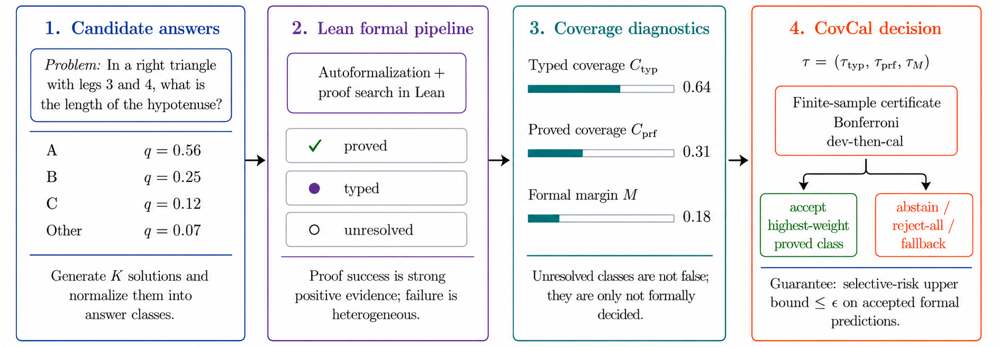
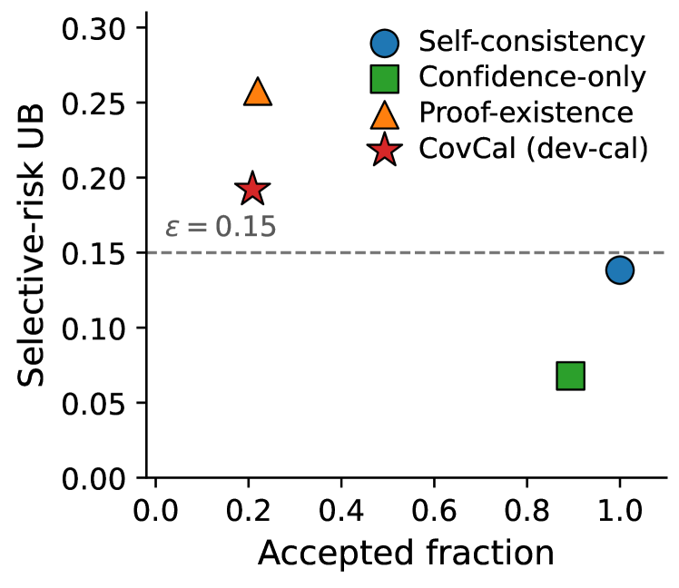

Treats Lean as a partial-observation judge of natural-language math answers, computing coverage diagnostics from Lean autoformalization and proof-search status logs.
Abstract
Lean is increasingly used to judge natural-language mathematical answers, but its signal is partial: many answers never formalize, and a failed proof may reflect an ill-typed statement or a missing library fact, not a wrong answer. On MATH-500 we show this signal is (i) sharply coverage-dependent, that is the proof-winning answer is correct 96% of the time at high proved coverage but 20% at low, and (ii) sparse and often unfaithful: a 7B autoformalizer proves a class for only 28% of problems, and a manual audit finds only approximately 43% of those proofs faithful. We propose COVCAL, a selector over Lean-trace diagnostics that certifies a finite-sample selective-risk bound on accepted answers or abstains, under two regimes (a conservative Bonferroni bound and a tighter dev-then-cal rule). Feasibility depends on autoformalization coverage: with the 7B formalizer the signal is too sparse and Bonferroni abstains on all 20 bootstrap partitions, whereas a prover-specialized formalizer reaches 79% coverage and flips it to feasible on 17 of 20, accepting approximately 48% of problems at 0.98 accepted accuracy. Since self-consistency alone is already 91% accurate, our contribution is a precise account of when, and with which formalizer, a partial formal signal can be trusted under risk control.
Problem
Lean is used to judge natural-language mathematical answers by formalizing and proving them, but this signal is partial: many answers never formalize, and a failed proof may reflect an ill-typed statement or missing library fact rather than a wrong answer. The reliability of formal selection depends sharply on coverage.
Approach
The paper proposes CovCal, a selective prediction wrapper that uses Lean-trace diagnostics (typed coverage, proved coverage, unresolved rival mass, formal margin) to decide when the formal signal is trustworthy. It certifies a finite-sample selective-risk bound on accepted answers or abstains, under two regimes: a conservative Bonferroni bound and a tighter dev-then-cal split rule. The method does not retrain the prover; it wraps any Lean-based selector with calibrated acceptance thresholds chosen from a fixed grid.

Figure 1: CovCal treats Lean as a partial-observation judge: trust formal evidence when coverage is sufficient, and abstain when coverage is too low. The method couples Lean-based formal traces with finite-sample selective prediction.
Results
On MATH-500, a 7B autoformalizer proves only 28% of problems and only ~43% of those proofs are faithful on manual audit; the Bonferroni method abstains on all 20 bootstrap partitions. A prover-specialized formalizer reaching 79% coverage makes CovCal feasible on 17 of 20 partitions, accepting ~48% of problems at 0.98 accepted accuracy. Self-consistency alone already achieves 91% accuracy, so the contribution is a precise characterization of when partial formal signals can be trusted.

Figure 2: Accepted fraction versus held-out selective-risk upper bound on the main run (dev-then-cal; K\!=\!20 bootstrap mean). The dashed line is \epsilon=0.15 . The formal selectors accept \approx 21\% of items just above \epsilon , while confidence-only abstention reaches 0.89 coverage at lower diagnostic risk; +fallback variants (full coverage) and the Bonferroni reject-all case are omitted.